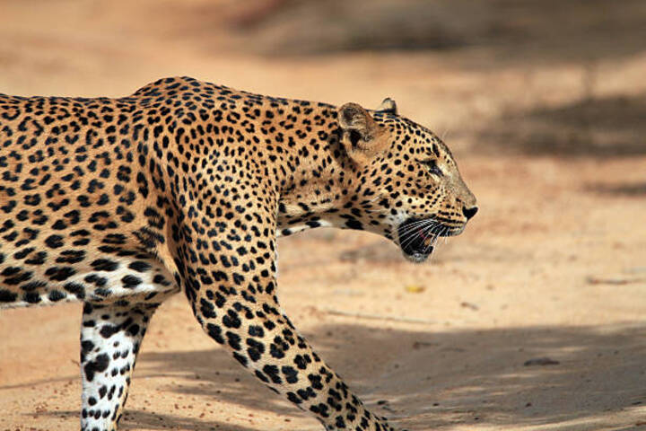

Yala National Park is the most visited and second largest national park in Sri Lanka, located in the southeast region of the island. The park covers 979 square kilometres (378 sq mi) and is divided into five blocks, each with its own wildlife and landscape. Yala is home to 44 varieties of mammal and 215 bird species. Among its more famous residents are the world's biggest concentration of leopards, majestic elephants, sloth bears, sambars, jackals, spotted dear, peacocks, and crocodiles. The park also has a rich cultural heritage, including ancient rock inscriptions, monasteries, and the Magul Maha Viharaya, the remnants of a temple built by King Kavantissa in the 2nd century BC.

One of the main attractions of Yala is the opportunity to see the elusive leopard in its natural habitat. Yala has one of the highest leopard densities in the world, estimated at one leopard per square kilometre. The leopards in Yala are a distinct subspecies endemic to Sri Lanka, known as Panthera pardus kotiya. They are the largest leopards in Asia, with males weighing up to 75 kg (165 lb) and females up to 60 kg (132 lb). They are also more confident and easy to observe than their counterparts in other regions, as they have become habituated to the presence of humans and vehicles. The best time to spot leopards in Yala is during the dry season, from February to July, when they come out to the open areas around the waterholes.